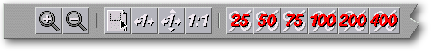
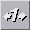
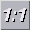

<!-- Documentation Xclamation (c)1994-2000 AXENE contact axene@axene.org>
<html>
<head>
<title>Barre horizontale d'icônes &quot;Zoom&quot;</title>
</head>

<body BGCOLOR="#FFFFFF" BACKGROUND="Images/back.gif" TEXT="#000000">
<p ALIGN="right">


<p>
<br>
<br>
La barre d'icônes 'Zoom' propose des outils
qui permettent de modifier le facteur d'agrandissement de la vue sur le plan
d'affichage du document actif. Le facteur d'agrandissement est
conservé pour chaque page de chaque document.
<br>
<br>
<hr>
<br>
<center>
<br>
<i><small>
Photo d'écran&nbsp;: Barre d'icônes Zoom
</i></small>
</center><p>
<br>
<hr>
<br>
<p>
<h3>Première section de la barre d'icônes&nbsp;:</h3>
<ul>
  <li>
     <a NAME="zoom_plus_icon">le
     premier bouton icône permet d'<b>augmenter le facteur de zoom
     de 25%</b> en centrant sur un point précis. Il faut cliquer
     sur le bouton gauche de la souris à l'endroit où
     l'on veut centrer l'agrandissement. Pour revenir rapidement au
     mode de 'sélection de cadre', il est possible de cliquer
     sur le bouton droit de la souris. Le facteur de zoom est limité
     au maximum à 400%. Si cette limite est atteinte,
     ce bouton icône n'a plus d'effet.
     </a><p>
  <li> 
     <a NAME="zoom_minus_icon">le
     deuxième bouton icône permet de <b>réduire le
     facteur de zoom de 25%</b> en centrant sur un point précis.
     Il faut cliquer sur le bouton gauche de la souris à l'endroit
     où l'on veut centrer la réduction. Pour revenir
     rapidement au mode de 'sélection de cadre', il est possible
     de cliquer sur le bouton droit de la souris. Le facteur de zoom
     est limité au minimum à 10%. Si cette limite
     est atteinte, ce bouton icône n'a plus d'effet.
     </a><p>
</ul>
<p>
<br>
<h3>Seconde section de la barre d'icônes&nbsp;:</h3>
<ul>
  <li>
     <a NAME="zoom_area_icon">le
     premier bouton icône permet d'<b>agrandir une zone du plan
     d'affichage</b>. Pour définir cette zone, il
     faut étirer un rectangle dans le plan d'affichage. Le contour
     du rectangle en cours d'étirement reste proportionnel
     aux dimensions du plan d'affichage. Il est possible d'annuler
     le changement de facteur d'agrandissement en cliquant sur le bouton
     droit de la souris, avant de placer le point source ou au cours de
     l'étirement de la zone rectangulaire. Le facteur de zoom
     est limité au maximum à 400%. Si cette limite 
     est atteinte, ce bouton icône n'a plus d'effet.
     </a><p>
  <li>
     <a NAME="full_width_icon">le
     second bouton icône permet de calculer le facteur d'agrandissement
     de telle manière que la <b>largeur de la page soit
     entièrement visible dans le plan d'affichage</b>.
     La page est centrée horizontalement dans le plan d'affichage.
     </a><p>
  <li>
     <a NAME="full_page_icon">le
     troisième bouton icône permet de calculer le facteur
     d'agrandissement de telle manière que
     l'<b>intégralité de la page soit visible dans le plan
     d'affichage</b>. La page est centrée horizontalement et
     verticalement dans le plan d'affichage.
     </a><p>
  <li>
     <a NAME="real_scale_icon">le
     dernier bouton icône permet de calculer le facteur d'agrandissement
     de telle manière que la page apparaisse dans ses <b>dimensions
     réelles</b>. La page est centrée horizontalement et
     verticalement dans le plan d'affichage. Attention! Xclamation
     effectue ses calculs à partir des informations
     délivrées par le serveur X.
     Si ces informations sont erronées, le calcul est faussé
     et la page ne peut pas être affichée avec ses dimensions
     réelles.
     Pour vérifier les informations données par le serveur
     X sur les dimensions de l'écran, essayez la commande 
     &quot;<tt>$&gt;&nbsp;xdpyinfo&nbsp;|&nbsp;grep&nbsp;dimensions</tt>&quot;.
     </a><p>
</ul>
<p>
<br>
<h3>Troisième section de la barre d'icônes&nbsp;:</h3>
<ul>
  <li>
     <a NAME="predefined_scale_icons">les
     six boutons icônes permettent d'initialiser le facteur
     d'agrandissement à respectivement 25%, 50%, 75%, 100%,
     200% et 400%.
     </a><p>
</ul>
<br>
<hr>
<p ALIGN="right">
<p>
</body>
</html>
